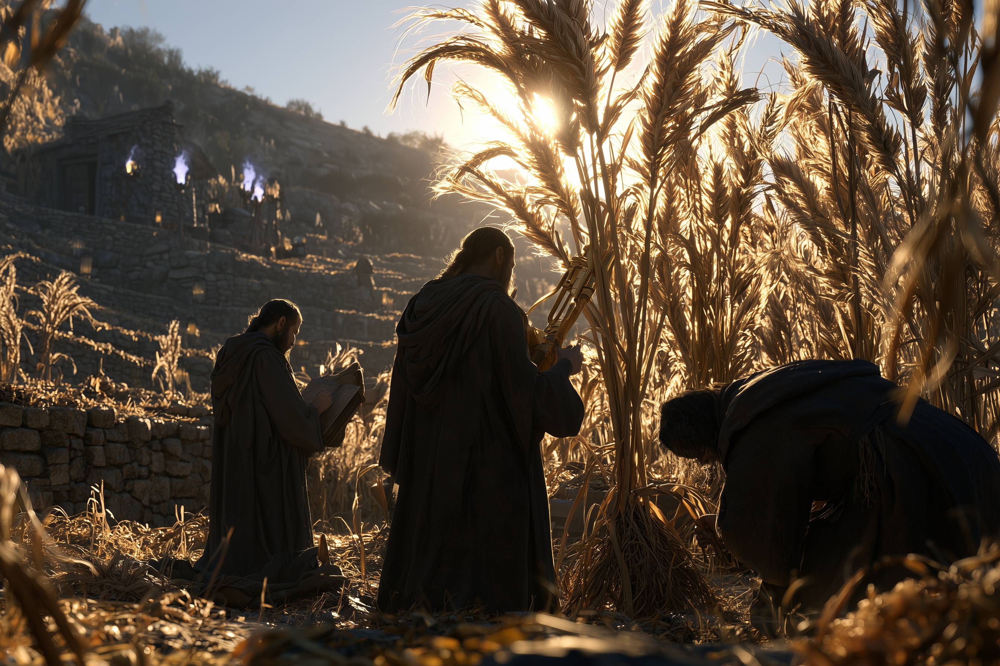

Votre royaume / Vue d’ensemble
Votre cité veille.
Colonie · Hôtel de ville niveau 11
An 3000 après la Rupture
Chantiers
1 en cours
Hôtel de ville · niveau 1118 min restantes · simulation

ScierieProchaine amélioration disponible
Le paysage reste visible ; les décisions se lisent ici.
Héros & conseil
Royaume
Votre héros
À la tête du royaume
DisponibleUn conseil accompagne votre royaume. Composition et progression à préciser.
Recherches
Institut Arcanique
AbondanceÉtude disponible · scénario fictif
Examinez les prérequis avant de lancer une nouvelle étude.
Mouvements
2 mouvementsÉclaireurs · Retour vers la cité
Reconnaissance · Contrée voisine12 min
Caravane · Transport
Vers votre colonie · Données fictives24 min
Garnison
Unités disponiblesSoldatsInfanterie
24GardesInfanterie
8ÉclaireursReconnaissance
3Scénario de revue : valeurs illustratives, aucune action sur le jeu réel.
Tester l’interface :